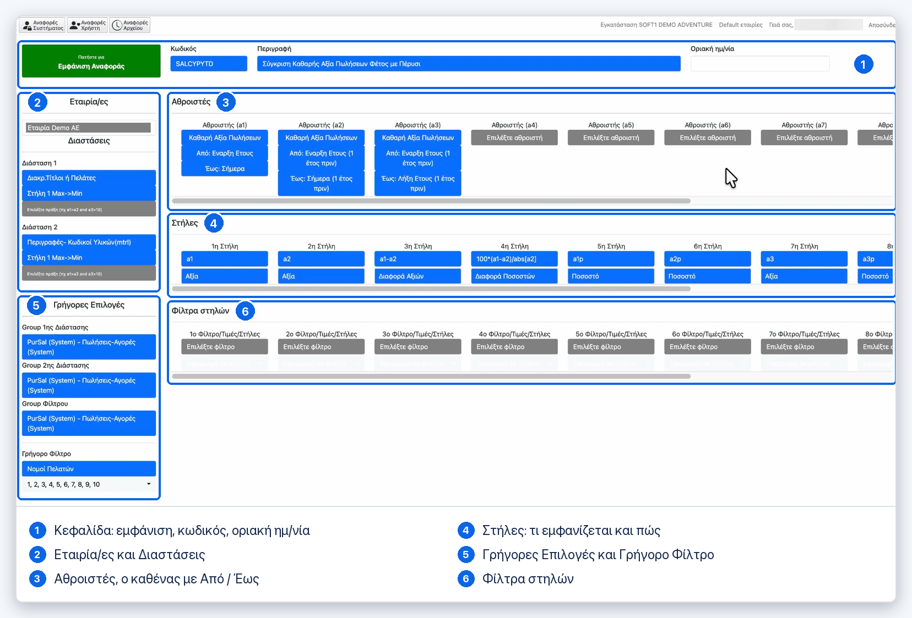
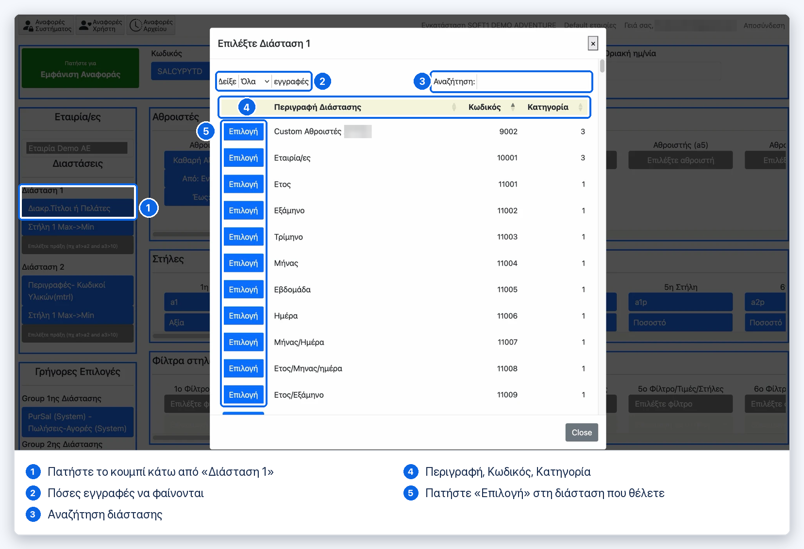
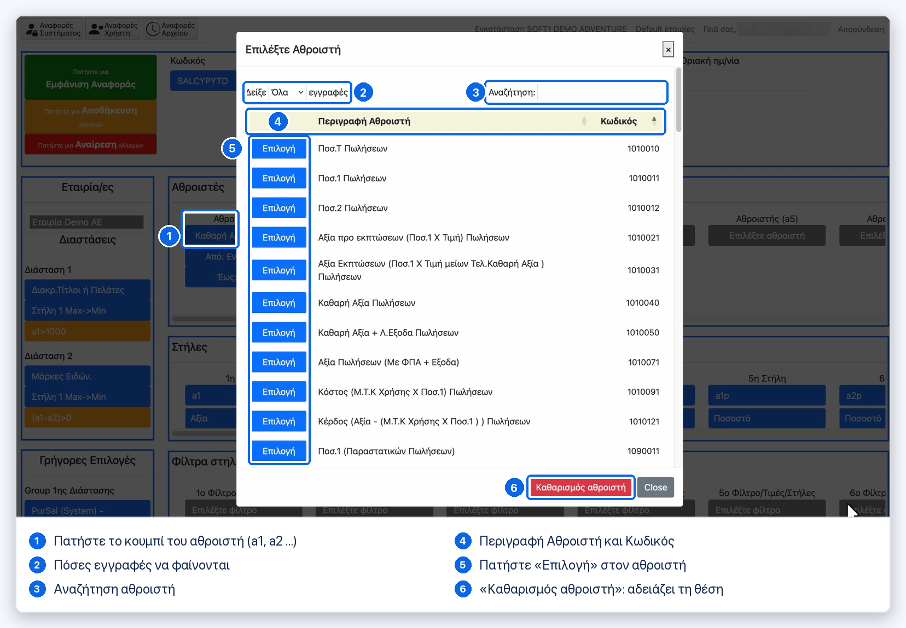
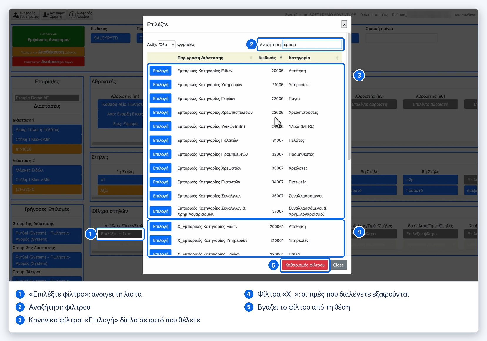
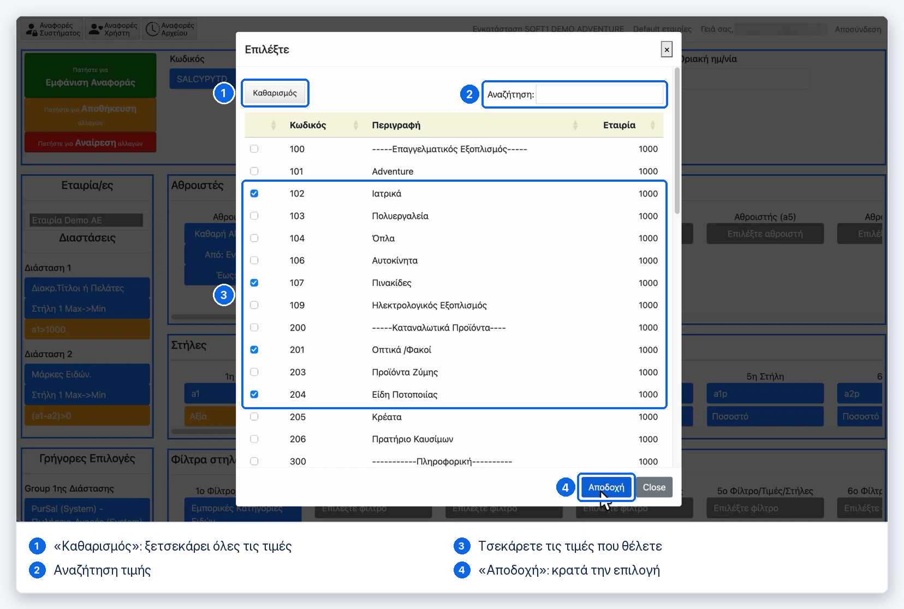
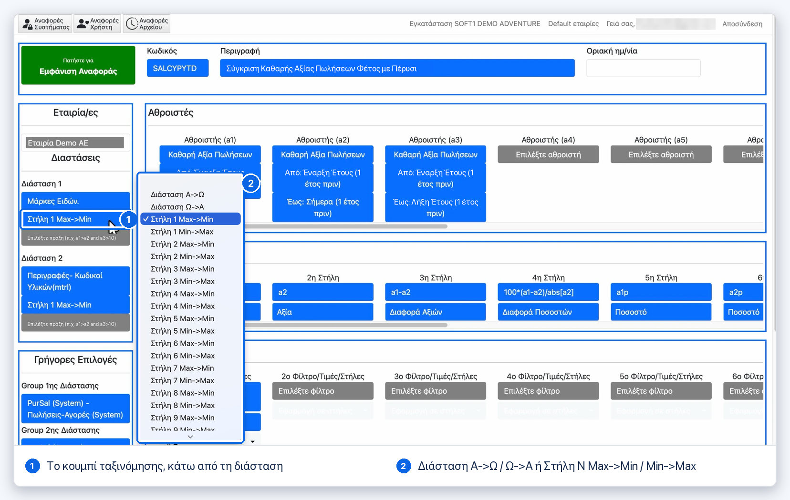
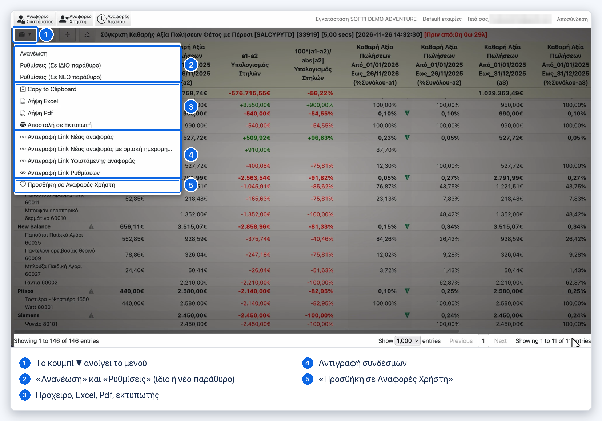
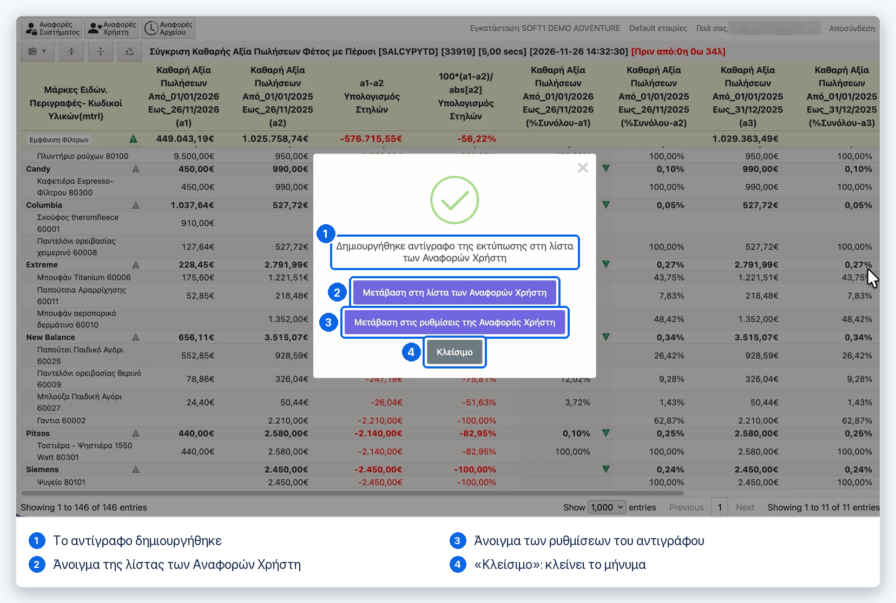
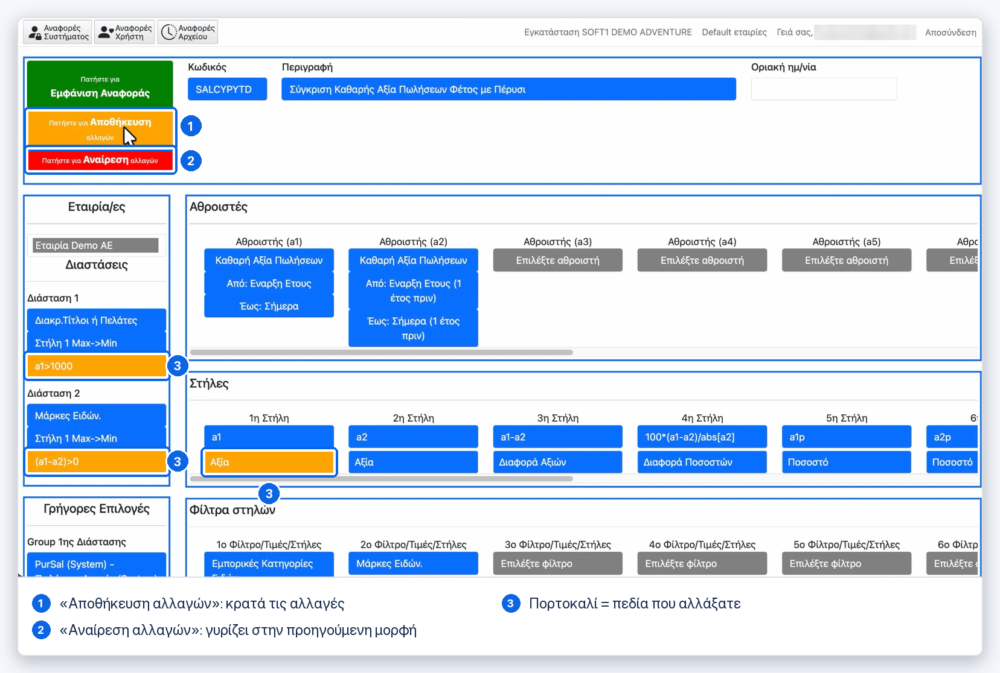

Δημιουργία αναφοράς
Πώς φτιάχνετε τη δική σας αναφορά στο MARS. Ξεκινάτε από μια υπάρχουσα, αλλάζετε τις ρυθμίσεις και την αποθηκεύετε στις Αναφορές Χρήστη.
Τι κάνει#
Στο MARS δεν ξεκινάτε από λευκή σελίδα. Ανοίγετε μια υπάρχουσα αναφορά (συνήθως μια από τις Αναφορές Συστήματος), αλλάζετε διαστάσεις, αθροιστές, περιόδους και φίλτρα, και την κρατάτε ως δική σας στις Αναφορές Χρήστη. Η αρχική αναφορά μένει όπως ήταν.
Πότε το χρησιμοποιώ#
Ο διευθυντής πωλήσεων θέλει κάθε Δευτέρα τις πωλήσεις ανά πωλητή, φέτος και πέρυσι, μόνο για δύο ομάδες ειδών. Τη στήνει μία φορά, την προσθέτει στις Αναφορές Χρήστη και από εκεί και πέρα την ανοίγει με ένα κλικ.
Βήματα#
Α. Ανοίξτε τις ρυθμίσεις#
- Στη λίστα αναφορών επιλέξτε Αναφορές Συστήματος και βρείτε μια αναφορά κοντά σε αυτό που θέλετε.
- Πατήστε πάνω της. Στο παράθυρο Γρήγορες επιλογές πατήστε το εικονίδιο με το γρανάζι, δίπλα στο Ανοιγμα αναφοράς σε νέα σελίδα.
- Ανοίγει η οθόνη ρυθμίσεων.

Β. Ορίστε τι θα δείχνει#
- Περιγραφή: δώστε ένα όνομα που θα αναγνωρίζετε, π.χ. «Πωλήσεις πωλητών φέτος-πέρυσι».
- Εταιρία/ες: επιλέξτε μία ή περισσότερες εταιρείες.
-
Διαστάσεις: η διάσταση ορίζει τι θα είναι κάθε γραμμή της αναφοράς (π.χ. πελάτης, μήνας, είδος). Πατήστε το κουμπί κάτω από Διάσταση 1. Στο παράθυρο Επιλέξτε Διάσταση 1 γράψτε στην Αναζήτηση αυτό που ψάχνετε και πατήστε Επιλογή δίπλα του. Αν θέλετε δεύτερη ανάλυση, κάντε το ίδιο στη Διάσταση 2.

Παράθυρο «Επιλέξτε Διάσταση 1» -
Αθροιστές: ο αθροιστής είναι το νούμερο που υπολογίζεται σε κάθε γραμμή. Στη θέση Αθροιστής (a1) πατήστε το κουμπί του (σε κενή θέση γράφει Επιλέξτε αθροιστή). Στο παράθυρο Επιλέξτε Αθροιστή γράψτε στην Αναζήτηση και πατήστε Επιλογή δίπλα σε αυτόν που θέλετε, π.χ. «Καθαρή Αξία Πωλήσεων». Για να αδειάσετε τη θέση, πατήστε Καθαρισμός αθροιστή.

Παράθυρο «Επιλέξτε Αθροιστή» -
Περίοδος: κάθε αθροιστής έχει δικό του διάστημα. Πατήστε το κουμπί Από (σε κενή θέση Επιλέξτε από) κάτω από τον αθροιστή. Στο παράθυρο πατήστε Επιλογή στην περίοδο που θέλετε, π.χ. Εναρξη Ετους, ή διαλέξτε σταθερή ημερομηνία. Κάντε το ίδιο στο Έως. Για σύγκριση με πέρυσι, βάλτε τον ίδιο αθροιστή στο Αθροιστής (a2) και, πριν πατήσετε Επιλογή, γράψτε
1στο Πριν από έτη της ίδιας γραμμής, και στο Από και στο Έως.
Παράθυρο «Επιλέξτε Ημερομηνία ή Ημερομηνιακό Διάστημα Έναρξης» με τον αριθμό «1» στο «Πριν από έτη» της γραμμής «Εναρξη Ετους» -
Στήλες: ορίζουν τι θα εμφανίζεται στην αναφορά. Σε κάθε στήλη γράφετε έναν αθροιστή ή μια πράξη. Στην 1η Στήλη γράψτε
a1και στη 2η Στήληa2. Για τη διαφορά, γράψτεa1-a2στην 3η Στήλη και διαλέξτε μορφή Διαφορά Αξιών. Για το ποσοστό μεταβολής, γράψτε100*(a1-a2)/abs[a2]και διαλέξτε Διαφορά Ποσοστών. Τοabs[a2]σημαίνει την τιμή του a2 χωρίς πρόσημο.
Πεδία στήλης με αθροιστή ή πράξη (a1, a2, a1-a2, ποσοστό μεταβολής) Μορφή στήλης: το κουμπί κάτω από το πεδίο της στήλης (π.χ. Αξία) ορίζει πώς εμφανίζεται η τιμή. Πατήστε το και διαλέξτε: Αξία, Διαφορά Αξιών, Ποσοστό, Διαφορά Ποσοστών, Θέση, Διαφορά Θέσεων, Ποσότητες ή Διαφορά Ποσοτήτων.

Ανοιχτή λίστα μορφής στήλης (Αξία, Διαφορά Αξιών, Ποσοστό …) -
Φίλτρα στηλών (προαιρετικά): στο 1ο Φίλτρο πατήστε Επιλέξτε φίλτρο, στο παράθυρο πατήστε Επιλογή δίπλα στο φίλτρο που θέλετε, μετά Επιλέξτε τιμές φίλτρου, και στο Εφαρμογή σε στήλες διαλέξτε σε ποιες στήλες ισχύει.
Φίλτρα που το όνομά τους αρχίζει από X_ δουλεύουν ανάποδα: οι τιμές που διαλέγετε εξαιρούνται. Π.χ. με το X_Εμπορικές Κατηγορίες Ειδών η στήλη δείχνει τα νούμερα χωρίς τις κατηγορίες που διαλέξατε. Με Καθαρισμός φίλτρου βγάζετε το φίλτρο από τη θέση.

Λίστα φίλτρων όπου φαίνονται φίλτρα «X_…» (εξαίρεσης) Τιμές φίλτρου: στο παράθυρο των τιμών τσεκάρετε όσες θέλετε (με την Αναζήτηση τις βρίσκετε πιο γρήγορα) και πατήστε Αποδοχή. Με Καθαρισμός ξετσεκάρονται όλες.

Παράθυρο τιμών φίλτρου με τσεκαρισμένες τιμές και το «Αποδοχή» Εφαρμογή σε στήλες: ανοίξτε το κάτω από το φίλτρο, τσεκάρετε τις στήλες (ή Επιλογή όλων) και πατήστε Πατήστε για εφαρμογή. Π.χ. με 1, 2 το φίλτρο ισχύει μόνο στην 1η και τη 2η στήλη. Με Καθαρισμός ξετσεκάρονται όλες.

Ανοιχτό «Εφαρμογή σε στήλες» με επιλεγμένες στήλες -
Ταξινόμηση (προαιρετικά): ορίζει με ποια σειρά βγαίνουν οι γραμμές. Πατήστε το κουμπί ταξινόμησης κάτω από τη Διάσταση 1 και διαλέξτε: Διάσταση Α->Ω ή Ω->Α για αλφαβητική σειρά, ή Στήλη N Max->Min / Min->Max για σειρά με βάση τα νούμερα μιας στήλης (π.χ. Στήλη 1 Max->Min = πρώτες οι μεγαλύτερες τιμές).

Ανοιχτή λίστα «Επιλέξτε ταξινόμηση» Συνθήκη γραμμών (προαιρετικά): στο πεδίο Επιλέξτε πράξη γράψτε ποιες γραμμές θέλετε να βγαίνουν. Παράδειγμα, με Διάσταση 1 τους πελάτες, Διάσταση 2 τις Μάρκες Ειδών,
a1τις φετινές πωλήσεις (αρχή έτους έως σήμερα) καιa2την ίδια περίοδο πέρυσι:- Στη Διάσταση 1 γράψτε
a1>1000: έρχονται μόνο οι πελάτες με φετινές πωλήσεις πάνω από 1.000 €. - Στη Διάσταση 2 γράψτε
(a1-a2)>0: μέσα σε κάθε πελάτη φαίνονται μόνο οι μάρκες με αύξηση σε σχέση με πέρυσι.

Πεδίο «Επιλέξτε πράξη» με συνθήκες στη Διάσταση 1 και στη Διάσταση 2 - Στη Διάσταση 1 γράψτε
Γ. Τρέξτε και κρατήστε την#
-
Πατήστε Εμφάνιση Αναφοράς. Η αναφορά τρέχει και ανοίγουν τα αποτελέσματα. Στην αναφορά που ήρθε υπάρχει το κουμπί Εμφάνιση Φίλτρων. Τα φίλτρα του είναι προσωρινά: αλλάζουν μόνο ό,τι βλέπετε στην οθόνη και δεν αποθηκεύονται. Για φίλτρο που θα ισχύει κάθε φορά, ορίστε το στις ρυθμίσεις (Φίλτρα στηλών ή συνθήκη γραμμών) και αποθηκεύστε την αναφορά. Δείτε «Αριθμητικά φίλτρα και ταξινόμηση».
-
Αν σας κάνει, ανοίξτε το μενού ▼ πάνω αριστερά στα αποτελέσματα και πατήστε Προσθήκη σε Αναφορές Χρήστη.

Αποτελέσματα με ανοιχτό το μενού ▼ πάνω αριστερά (όλες οι επιλογές ορατές) -
Θα δείτε το μήνυμα «Δημιουργήθηκε αντίγραφο της εκτύπωσης στη λίστα των Αναφορών Χρήστη». Από εκεί πατήστε Μετάβαση στη λίστα των Αναφορών Χρήστη ή Μετάβαση στις ρυθμίσεις της Αναφοράς Χρήστη, αλλιώς Κλείσιμο.

Μήνυμα «Δημιουργήθηκε αντίγραφο της εκτύπωσης…» μετά το «Προσθήκη σε Αναφορές Χρήστη»
Δ. Αλλαγές αργότερα#
- Ανοίξτε την αναφορά από τις Αναφορές Χρήστη και πηγαίνετε στις ρυθμίσεις.
-
Μόλις αλλάξετε ένα πεδίο, π.χ. μια συνθήκη γραμμών ή τη μορφή μιας στήλης, γίνεται πορτοκαλί και εμφανίζονται τα κουμπιά Αποθήκευση αλλαγών και Αναίρεση αλλαγών.

Αλλαγμένο πεδίο (πορτοκαλί) με τα κουμπιά «Αποθήκευση αλλαγών» και «Αναίρεση αλλαγών» ορατά -
Πατήστε Αποθήκευση αλλαγών για να κρατήσετε τις αλλαγές, ή Αναίρεση αλλαγών για να γυρίσετε στην προηγούμενη μορφή.
Συμβουλές και συχνά λάθη#
- Δεν βρίσκω κουμπί «Νέα αναφορά». Δεν υπάρχει. Ξεκινάτε πάντα από μια υπάρχουσα αναφορά.
- Δεν βλέπω «Αποθήκευση αλλαγών» σε αναφορά συστήματος. Είναι φυσιολογικό. Οι αναφορές συστήματος αλλάζουν μόνο από τον διαχειριστή. Εσείς τρέχετε με τις αλλαγές σας και προσθέτετε το αποτέλεσμα στις Αναφορές Χρήστη.
- Η «Εμφάνιση Αναφοράς» δεν αλλάζει την αποθηκευμένη αναφορά. Τρέχει με όσα βλέπετε στην οθόνη και γράφει μια εγγραφή στις Αναφορές Αρχείου. Για να αλλάξει η αναφορά χρήστη, πατήστε Αποθήκευση αλλαγών.
- Ελληνικά γράμματα στις πράξεις. Αν γράψετε «α1», το MARS το μετατρέπει μόνο του σε «a1».
- Δεν βλέπω τον αθροιστή που χρειάζομαι. Ίσως δεν σας έχει δοθεί πρόσβαση. Ζητήστε τον από τον διαχειριστή.
- Μπορώ να ζητήσω από τον AI Assistant να μου φτιάξει την αναφορά; Ναι. Δείτε το άρθρο «AI Assistant».